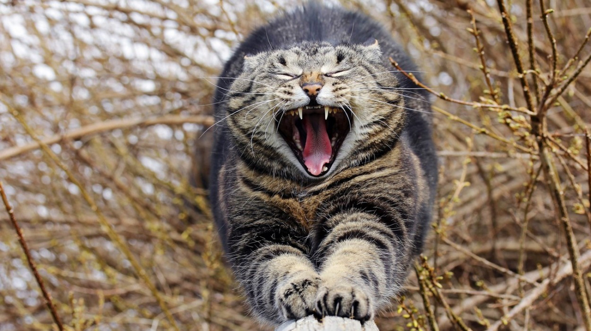

Základní informace
Kočka domácí (Felis catus, dříve například Felis silvestris catus) je domestikovaná forma kočky plavé, která je již po tisíciletí průvodcem člověka. Stejně jako její divoká příbuzná patří do podčeledi malé kočky, a je typickým zástupcem skupiny. Má pružné a svalnaté tělo, dokonale přizpůsobené lovu, ostré drápy a zuby a vynikající zrak, sluch a čich. Kočka domácí vždy sloužila člověku především jako lovec hlodavců, uplatňuje se také jako společník a mazlíček člověka. I domácí kočka je obvykle velmi efektivním a schopným lovcem, který dokáže ve svém okolí zahubit velké množství drobných obratlovců (především hlodavců a jiných savců, ale také ptáků, plazů, ryb a dalších).

Koťata
Koťata se rodí slepá a hluchá, osrstěná. Hmotnost se pohybuje okolo 57-114 gramů. Koťata mají hned po narození vyvinutý čich a hmat, tyto dva smysly používají k nalezení bradavky matky. Hned po porodu se matce začne vylučovat mlezivo (kolostrum), první potrava pro novorozená koťata. Teprve později jsou koťata krmena mlékem. Kočičí mléko je albuminové, neobsahuje kasein a jen malé množství laktózy, proto je kravské mléko jako náhradní potrava pro koťata nevhodné a nebezpečné. Náhradním řešením pro krmení koťat, která ztratila matku, jsou specializované mléčné náhražky nebo v nouzi kondenzované mléko, ředěné vlažnou vodou.
| Druh mléka | Voda (%) | Tuk (%) | Bílkoviny (%) | Sacharidy (%) | Popel (%) |
|---|---|---|---|---|---|
| Lidské mléko | 87 | 4,8 | 1,5 | 6,4 | 0,3 |
| Kočičí mléko | 82 | 3,3 | 9,1 | 4,9 | 0,6 |
| Kravské mléko | 88 | 3,7 | 3,2 | 4,7 | 0,7 |